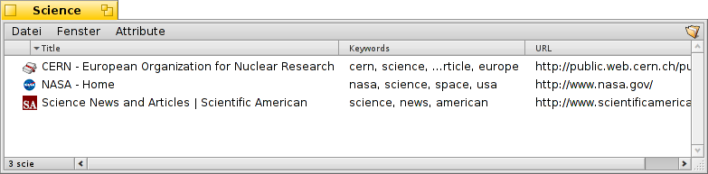

WebPositive
WebPositive
| Deskbar: | ||
| Localização: | /boot/system/apps/WebPositive | |
| Definições: | ~/config/settings/WebPositive/ - Arquivos de configuração, cookies, cache e histórico de navegação | |
| ~/config/settings/WebPositive/Bookmarks - Todos os marcadores como arquivos individuais |
WebPositive, ou simplesmente Web+, é o navegador web nativo do Haiku. Uma parte do nome é uma referência ao navegador simples do BeOS, NetPositive, a outra parte refere-se a sua base moderna: o WebKit. Esta biblioteca de renderização HTML de código aberto é o coração de outros principais navegadores, como o Safari do Mac OS X e o Google Chrome. Pelo uso do WebKit, que está sempre em evolução, Web+ será capaz de se manter atualizado com as novas tecnologias da web.

A interface do WebPositive é muito avançado:embaixo da barra de menus existe outra barra com botões de navegação para o sítio anterior e para o próximo no seu histórico de navegação, parar o carregamento de uma página e (opcionalmente) um botão para voltar à sua página inicial.
Em seguida vem o campo de localização para inserir o endereço do sítio.
Abaixo desta barra de navegação aparecem as páginas web. Pode-se abrir muitas páginas paralelamente carregando-as dentro de suas próprias guias.
Na base da janela está a barra de status, mostrando o endereço do sítio que está sendo carregado ou do vínculo onde o cursor do mouse está indicando. Enquanto uma página está sendo carregada, uma barra de progresso aparece à direita.
 Configurações
Configurações
Do menu podemos abrir uma caixa de diálogo para configurar alguns itens básicos do WebPositive.

A primeira aba trata das configurações gerais: Que arquivo ou endereço é utilizado como , qual é usado como , qual é usada para as coisas que baixar da rede.
Dois menus pop-up permitem decidir que página carregar - se for o caso - quando abrir uma nova janela ou guia.
Através das caixas de verificação seguintes podemos ocultar a barra da guia quando existe apenas uma página aberta. A interface do WebPositive pode ser configurada para ocultar-se automaticamente em mode de tela cheia e o cursor do mouse pode ser oculto automaticamente sempre que não mover-se no momento.
Finalmente, pode-se decidir incluir um botão "Página inicial" na barra de navegação e definir o número de dias a serem gravados pelo navegador no histórico.
Na segunda aba pode-se escolher as fontes usadas por padrão, serifada, não-serifada ou monoespaçada, e definir seus tamanhos.
A última aba é usada para configurar um servidor proxy.
Navegando
Se já usou um navegador antes, WebPositive não deverá apresentar muitas surpresas. Ao invés de passarmos por todos os itens do menu e características, vamos dar uma olhada em alguns pontos.

Novas abas são criadas com o botão + à direita da barra da guia ou, se ainda existir bastante espaço, com um duplo-clique em uma área vazia da barra. Se existirem mais guias abertas do que cabe na largura da barra, os botões de rolagem < > tornam-se ativos, permitindo rolar a barra da guia para a esquerda e para a direita. O botão ∨ na extremidade direita abriga um menu pop-up com todas as guias abertas para uma navegação ainda mais rápida.
Clicar em um vínculo com o botão do meio do mouse abre a página em uma nova guia em segundo plano. Segurar SHIFT ao clicar com o botão do meio abre-a no primeiro plano.
A partir do menu pode-se and de uma página. Existe também a opção de , deixando todas as imagens em seu tamanho original.
Se mudar para modo de tela cheia e houver ativado a definição de ocultar a interface, ela irá desaparecer após um segundo. Para trazê-la temporariamente de volta, simplesmente mova o cursor do mouse para o topo da tela.

Enquanto digita no campo de texto do localizador, o navegador compara a sequência digitada aos sítios já visitados e lista-os abaixo do campo de texto. Também pode continuar digitando para reduzir a lista de sítios possíveis ou escolher uma entrada com as setas ↑ ou ↓. ENTER irá carregar a página. Pode também usar o botão na extrimidade direita que também serve para recarregar a página.
Sequências não reconhecidas como endereços válidos serão pesquisados pelo Google, então o campo do localizador funciona como um atalho rápido para pesquisas na web.Clicar com o botão direito do mouse abre um menu de contexto o qual, dependendo do objeto clicado, permite abrir o link em uma nova janela ou nova guia, baixar o objetco, etc.
mostra uma barra de localização na base do navegador para iniciar uma pesquisa na própria página.
Favoritos
Os marcadores do WebPositive são gerenciados como arquivos e pastas em ~/config/settings/WebPositive/Bookmarks/. Adicionar um marcador irá criar um novo arquivo lá. Abra rapidamente uma pasta com .
Pode-se mudar o endereço, nome, título e inserir palavras-chave da mesma forma que com qualquer arquivo com atributos. Certifique-se de ter todas as suas colunas exibidas via menu do Rastreador (Tracker), então selecione um arquivo, pressione ALT E e comece a edição do atributo; altere colunas de atributos com TAB.
Podemos classificar marcadores dentro de pastas diferentes que nós mesmos criarmos.
Usando o Rastreador (Tracker) para gerenciar e navegar por marcadores pode-se usufruir de suas características únicas para rapidamente encontrar o que estiver procurando.
Ativando nas Preferências do Rastreador (Tracker), sua lista de marcadores é reduzida para encontrar aquelas que correspondam à sua pesquisa. As teclas ↑ ou ↓ movem a seleção e pressionando ENTER abre o sítio. Certifique-se de exibir todas as colunas de atributos para aplicar o filtro a nome, título, endereço e palavras-chave.
Para isso funcionar, todos os marcadores devem ser mantidos na pasta ~/config/settings/WebPositive/Bookmarks/ e apenas cópias devem ser ordenadas dentro de subpastas personalizadas para uso no menu do WebPositive (se em todos). Além disso, na verdade preencher os atributos de palavras-chave ajuda...
Downloads
abre uma janela listando todas os downloads passados e em curso:

Arquivos sendo baixados no momento são mostrados com uma barra de progresso crescente e, semelhantemente a copiar arquivos no Rastreador (Tracker), informações sobre a velocidade de download, tamanho do arquivos e tempo estimando de término. Botões à direita permitem e um download, ou o arquivo, ou sua entrada da lista. Os botões e na parte de baixo da janela executam o anunciado a todas as entradas da lista. "Faltando" são arquivos que foram deletados durante o download.
Mover para o Lixo um arquivo que está sendo baixado no momento irá parar o download. Isso é notado, pelo fato do ícone tornar-se "fantasma".
Geralmente, WebPositive é muito tolerante quando se trata de gerir arquivos com o Rastreador (Tracker). Arquivos podem ser renomeados ou movidos mesmo enquanto são baixados e mesmo após o término do download, estas mudanças refletem-se na janela de Downloads.
Já se perguntou de que sítio baixou um pacote em particular, uma imagem ou qualquer outro arquivo? Pode-se rastrear a origem abrindo o arquivo com o Examinador de Disco e dando uma olhada em seu META:url atributo.
Quer ter um endereço web mostrado permanentemente em sua pasta de Downloads? Apenas copie um marcador para dentro dele, mantenha a coluna de atributo do marcador exposta e remova o marcador novamente.
Atalhos de teclado
Aqui estão alguns atalhos de teclado úteis:
| ALT T | Abre uma nova aba. | |
| ALT W | Fecha a aba atual. | |
| ALT N | Abre uma nova janela. | |
| SHIFT ALT W | Fecha a janela atual. | |
| ALT ENTER | Alterna para o modo de tela cheia. | |
| ALT R or F5 | Atualiza a página atual. | |
| ALT H | Abre a página inicial. | |
| ALT D | Exibe/oculta a janela Downloads. | |
| ALT F | Exibe a barra de localização para pesquisas na página (ocultar com ESC). | |
| ALT B | Adiciona a página atual aos favoritos. | |
| ALT M | Gerenciar os favoritos, abrindo a pasta Favoritos. | |
| ALT ← | Página anterior no histórico. | |
| ALT → | Próxima página no histórico. |